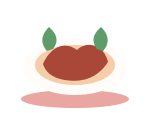

오늘 뭐 먹지?
고민은 짧게, 만족은 오래.
3가지만 알려주세요
어떻게 · 누구와 · 얼마에

친구와30분 이내1만원대
취향은 한 번만 알려주세요.
오늘의 선택은 세 가지 질문이면 충분해요.
입맛은 계정에 저장돼요. 나중에 언제든 바꿀 수 있어요.
고민은 짧게, 만족은 오래.
어떻게 · 누구와 · 얼마에

시간대에 어울리는 음식을 추천해드릴게요
베스트 매치
도보 15분 · 지금 영업 중
후보를 고르고 링크를 보내면 친구들이 투표해요.
불러오는 중…

아직 선택된 메뉴가 없어요
메뉴 찾기를 먼저 해주세요
다른 사람들이 공개한 식사 기록이에요
메뉴를 검색하고 상세정보를 확인해 보세요
잠시만 기다려 주세요.
조건 조합별 후보 수와 추천 순위를 확인합니다.
출처·재료·조리 단계·실패 포인트를 메뉴별로 검수합니다.